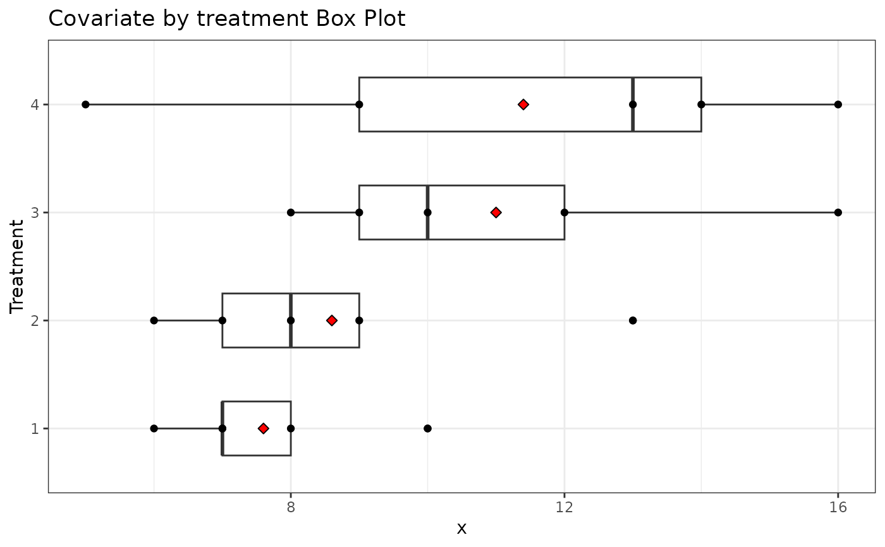

Example 7.3 from Generalized Linear Mixed Models: Modern Concepts, Methods and Applications by Walter W. Stroup (p-223)
Source:R/Exam7.3.R
Exam7.3.RdExam7.3 explains multifactor models with some factors qualitative and some quantitative(Unequal slopes ANCOVA)
References
Stroup, W. W. (2012). Generalized Linear Mixed Models: Modern Concepts, Methods and Applications. CRC Press.
@seealso
DataSet7.3
Author
Muhammad Yaseen (myaseen208@gmail.com)
Adeela Munawar (adeela.uaf@gmail.com)
Examples
library(car)
library(ggplot2)
library(emmeans)
data(DataSet7.3)
DataSet7.3$trt <- factor(x = DataSet7.3$trt )
##----ANCOVA(Unequal slope Model)
Exam7.3fm1 <- aov(formula = y ~ trt*x, data = DataSet7.3)
car::Anova( mod = Exam7.3fm1 , type = "III")
#> Anova Table (Type III tests)
#>
#> Response: y
#> Sum Sq Df F value Pr(>F)
#> (Intercept) 422.13 1 57.6572 6.388e-06 ***
#> trt 145.43 3 6.6212 0.006881 **
#> x 4.20 1 0.5733 0.463568
#> trt:x 184.51 3 8.4005 0.002809 **
#> Residuals 87.86 12
#> ---
#> Signif. codes: 0 ‘***’ 0.001 ‘**’ 0.01 ‘*’ 0.05 ‘.’ 0.1 ‘ ’ 1
Plot <-
ggplot(
data = DataSet7.3
, mapping = aes(x = factor(trt), y = x)
) +
geom_boxplot(width = 0.5) +
coord_flip() +
geom_point() +
stat_summary(
fun = "mean"
, geom = "point"
, shape = 23
, size = 2
, fill = "red"
) +
theme_bw() +
ggtitle("Covariate by treatment Box Plot") +
xlab("Treatment")
print(Plot)

##----ANCOVA(Unequal slope Model without intercept at page 224)
Exam7.3fm2 <- lm(formula = y ~ 0 + trt/x, data = DataSet7.3)
summary(Exam7.3fm2)
#>
#> Call:
#> lm(formula = y ~ 0 + trt/x, data = DataSet7.3)
#>
#> Residuals:
#> Min 1Q Median 3Q Max
#> -4.1473 -1.5168 -0.3092 1.2697 4.2013
#>
#> Coefficients:
#> Estimate Std. Error t value Pr(>|t|)
#> trt1 52.2940 6.8869 7.593 6.39e-06 ***
#> trt2 74.2824 4.4731 16.607 1.21e-09 ***
#> trt3 78.2623 4.8592 16.106 1.72e-09 ***
#> trt4 56.8222 3.7134 15.302 3.09e-09 ***
#> trt1:x -0.6754 0.8921 -0.757 0.464
#> trt2:x -3.7459 0.5007 -7.481 7.42e-06 ***
#> trt3:x -4.4552 0.4278 -10.414 2.31e-07 ***
#> trt4:x -2.3346 0.3080 -7.581 6.49e-06 ***
#> ---
#> Signif. codes: 0 ‘***’ 0.001 ‘**’ 0.01 ‘*’ 0.05 ‘.’ 0.1 ‘ ’ 1
#>
#> Residual standard error: 2.706 on 12 degrees of freedom
#> Multiple R-squared: 0.9971, Adjusted R-squared: 0.9952
#> F-statistic: 519.7 on 8 and 12 DF, p-value: 4.737e-14
#>
library(parameters)
model_parameters(Exam7.3fm2)
#> Parameter | Coefficient | SE | 95% CI | t(12) | p
#> -------------------------------------------------------------------
#> trt [1] | 52.29 | 6.89 | [37.29, 67.30] | 7.59 | < .001
#> trt [2] | 74.28 | 4.47 | [64.54, 84.03] | 16.61 | < .001
#> trt [3] | 78.26 | 4.86 | [67.68, 88.85] | 16.11 | < .001
#> trt [4] | 56.82 | 3.71 | [48.73, 64.91] | 15.30 | < .001
#> trt [1] × x | -0.68 | 0.89 | [-2.62, 1.27] | -0.76 | 0.464
#> trt [2] × x | -3.75 | 0.50 | [-4.84, -2.65] | -7.48 | < .001
#> trt [3] × x | -4.46 | 0.43 | [-5.39, -3.52] | -10.41 | < .001
#> trt [4] × x | -2.33 | 0.31 | [-3.01, -1.66] | -7.58 | < .001
#>
#> Uncertainty intervals (equal-tailed) and p-values (two-tailed) computed
#> using a Wald t-distribution approximation.
##--Lsmeans treatment at x=7 & 12 at page 225
emmeans(object = Exam7.3fm2, specs = ~trt|x, at = list(x = c(7, 12)))
#> NOTE: A nesting structure was detected in the fitted model:
#> x %in% trt
#> trt = 1, x = 7:
#> emmean SE df lower.CL upper.CL
#> 47.6 1.32 12 44.7 50.4
#>
#> trt = 2, x = 7:
#> emmean SE df lower.CL upper.CL
#> 48.1 1.45 12 44.9 51.2
#>
#> trt = 3, x = 7:
#> emmean SE df lower.CL upper.CL
#> 47.1 2.10 12 42.5 51.6
#>
#> trt = 4, x = 7:
#> emmean SE df lower.CL upper.CL
#> 40.5 1.82 12 36.5 44.4
#>
#> trt = 1, x = 12:
#> emmean SE df lower.CL upper.CL
#> 44.2 4.11 12 35.2 53.1
#>
#> trt = 2, x = 12:
#> emmean SE df lower.CL upper.CL
#> 29.3 2.09 12 24.8 33.9
#>
#> trt = 3, x = 12:
#> emmean SE df lower.CL upper.CL
#> 24.8 1.28 12 22.0 27.6
#>
#> trt = 4, x = 12:
#> emmean SE df lower.CL upper.CL
#> 28.8 1.22 12 26.1 31.5
#>
#> Confidence level used: 0.95